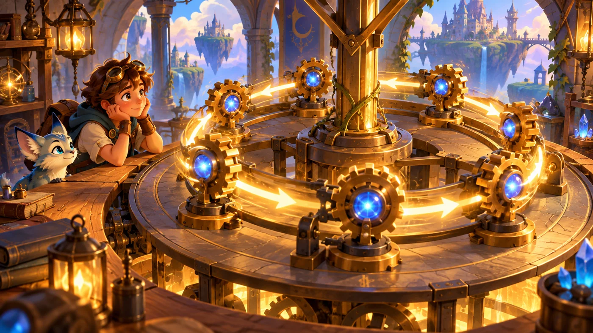

故事：长廊望不到头，宝石一路铺到远处。
塔林说：你会走一步、会判断方向了。
可这一段路有个特点——每一步的动作完全一样。
既然一样，为什么要写那么多遍？
扣哒考级 · GESP C++ 一级 · 第 6 单元 | 烛火岗哨 CANDLEWATCH OUTPOST
永不熄的齿轮 循环结构：重复执行
Loops: Repeating Actions

塔林
铁壁骑士 · 你的向导
塔顶的齿轮室轰隆作响。一组巨大的青铜齿轮咬合在一起，一圈一圈转个不停。
塔林指着它们说：哨火为什么永不熄灭？因为它每隔一会儿就被"重复一次"。
你的程序里也有这样的齿轮——它叫循环。写一次，跑很多遍。
塔林指着它们说：哨火为什么永不熄灭？因为它每隔一会儿就被"重复一次"。
你的程序里也有这样的齿轮——它叫循环。写一次，跑很多遍。
塔林 · 铁壁骑士
前面五单元，程序要么走直线，要么在岔口选一条。但有些事，需要重复做很多遍——比如"把 1 到 100 加起来""把屏幕上的敌人一个个打掉"。
要是写一百行 cout，那就太蠢了。这一单元我们学循环：让一段代码自动重复。

assets/illustrations/py-L1-06-01_outpost_arrival.webp
【配图位】黄昏的烛火岗哨：砂岩哨塔塔尖燃着青蓝色永恒的火焰，塔身外挂着一整排咬合转动的青铜齿轮；安雅在门口向新兵招手，新兵怀里抱着一卷图纸。
0 单元导语与目标
Unit Overview
0.1 学习目标
1学完这个单元，你将能……
- 说清循环的作用与"三要素"
- 熟练写出
for、while、do-while - 准确判断循环的执行次数
- 知道循环结束后循环变量是几
- 用
break与continue控制流程 - 看懂嵌套循环，预测它的输出
2对标 GESP 考纲（C++ 一级）
- 掌握
for循环的写法与执行过程 - 掌握
while与do-while循环 - 掌握
break与continue的作用 - 了解循环的嵌套
- 考核目标：能判断循环的次数与输出结果，能写出简单的循环程序
0.2 考纲对照
| 本单元小节 | 对应考纲条目 | 真题常考形式 |
|---|---|---|
| 2 for 循环 | for 语句 | 给一段 for，问循环结束后的 i 和累加结果 |
| 3 while 循环 | while 语句 | 条件写错会不会死循环 |
| 4 do-while | do-while 语句 | 它和 while 的唯一区别 |
| 5 break 与 continue | 循环控制 | 有 continue / break 时输出哪些值 |
| 6 嵌套循环 | 循环的嵌套 | 两层循环一共跑了多少次 |
1 为什么要循环
Why Loop
算 1 到 100 的和：写一百行，还是写三行？
C++
// 笨办法：写 100 行
int s = 0;
s = s + 1;
s = s + 2;
// …… 中间省略 95 行 ……
s = s + 100;
// 聪明办法：用循环
int sum = 0;
for (int i = 1; i <= 100; i++) {
sum = sum + i;
}
cout << sum; // 5050OUTPUT 5050
图 2（SVG）：循环的三要素与工作过程

assets/illustrations/cpp-L1-06-03_loop_clockwork.webp
【配图位】齿轮室里一台立式钟表机械：顶部是一个"上发条"的旋钮（对应起点），表面上一根指针指着一圈刻度（对应条件：没转到 12 就一直转）；侧面是一个由齿轮带动的棘轮，每转一圈就"咔"地推进一格（对应推进）；一名新兵站在旁边看着指针一圈圈走。扣哒世界卡通风格，青铜与暖光质感。
打个比方：
循环就像一只会自己转的钟，它身上只有三个部件：
① 上发条的旋钮——决定从哪里开始转（起点）；
② 表盘上的刻度——决定什么时候停（条件）；
③ 一格一格推进的棘轮——决定每圈往前挪多少（推进）。
三个部件缺一不可。少了第③个，指针就停在原地——那就是"死循环"。
① 上发条的旋钮——决定从哪里开始转（起点）；
② 表盘上的刻度——决定什么时候停（条件）；
③ 一格一格推进的棘轮——决定每圈往前挪多少（推进）。
三个部件缺一不可。少了第③个，指针就停在原地——那就是"死循环"。
再用生活里的例子走一遍：
围着操场跑 5 圈——
起点：
条件：
推进：
把"跑圈"换成任何一件重复的事，都是这三个问题。
起点：
int i = 1;（从第 1 圈开始）条件：
i <= 5（跑到第 5 圈就停）推进：
i++（每跑完一圈，在记分牌上加一格）把"跑圈"换成任何一件重复的事，都是这三个问题。
写循环前先问自己三个问题：
① 从哪里开始？（
② 什么时候继续？（
③ 每次怎么变？（
这三个问题答清楚了，循环就不会写错。
① 从哪里开始？（
int i = 1;）② 什么时候继续？（
i <= 100）③ 每次怎么变？（
i++）这三个问题答清楚了，循环就不会写错。
2 for 循环
The for Loop
2.1 三段式
for 把三个要素都写在一行里
C++
for (int i = 1; i <= 5; i++) {
cout << i << " ";
}
// 输出：1 2 3 4 5拆开看
int i = 1（起点，只做一次）；i <= 5（条件，每轮检查）；i++（推进，每轮末尾做）| 想做的事 | 写法 | 循环次数 |
|---|---|---|
| 从 1 数到 5 | for (i = 1; i <= 5; i++) | 5 次 |
| 从 0 数到 4 | for (i = 0; i < 5; i++) | 5 次 |
| 从 1 数到 100 | for (i = 1; i <= 100; i++) | 100 次 |
| 只数偶数 | for (i = 2; i <= 10; i += 2) | 5 次 |
| 从 10 倒数到 1 | for (i = 10; i >= 1; i--) | 10 次 |
次数怎么数？
别靠猜，用"末端值"验算：
for (i = 1; i <= 5; i++) —— i 依次取 1、2、3、4、5，共 5 次；for (i = 0; i < 5; i++) —— i 依次取 0、1、2、3、4，也是 5 次。< 和 <= 差一个，次数就可能差一次——这是最常见的失分点。
2.2 循环结束后 i 是几
真题级细节：循环跳出后，i 已经不是最后那个数了
C++
int i, cnt = 0;
for (i = 0; i < 10; i++)
cnt += 1;
cout << i << ' ' << cnt; // 10 10OUTPUT 10 10
打个比方：
循环条件就像进门的门票检查：每进来一次都要验一遍票，验完票才让你干一次活。
当 i = 9 时验票通过，干完这一轮，记分牌再加一格变成 10；
接着拿 10 去验票——10 < 10 不成立，被拦在门外了，循环到此结束。
所以循环一结束，i 就停在"第一个被拦下来"的 10 上，而不是最后进去的 9。
i < 10 意思是"小于 10 才能进"。当 i = 9 时验票通过，干完这一轮，记分牌再加一格变成 10；
接着拿 10 去验票——10 < 10 不成立，被拦在门外了，循环到此结束。
所以循环一结束，i 就停在"第一个被拦下来"的 10 上，而不是最后进去的 9。
为什么 i 是 10，不是 9？
循环体在 i = 0 ~ 9 时各执行一次（共 10 次，所以
执行完
所以循环结束时，i 是"第一个让条件不成立的值"，也就是 10。
cnt = 10）。执行完
i = 9 那一轮后，会再执行一次 i++，把 i 变成 10，
然后才去检查条件 10 < 10——不成立，跳出。所以循环结束时，i 是"第一个让条件不成立的值"，也就是 10。
再看一个：起点是负数
C++
int cnt = 0, i;
for (i = -10; i < 0; i++)
cnt += 1;
cout << (i * cnt); // 0OUTPUT 0 ——i 从 -10 到 -1 共 10 次，cnt = 10；循环结束时 i = 0，所以 0 × 10 = 0
2.3 步长与倒着数
第三段可以不是 i++
C++
// 每次加 3
for (int i = 0; i < 10; i += 3) cout << i << " "; // 0 3 6 9
// 倒着数
for (int i = 5; i >= 1; i--) cout << i << " "; // 5 4 3 2 1
// 每次乘 2
for (int i = 1; i <= 64; i *= 2) cout << i << " "; // 1 2 4 8 16 32 64要点 三段里的每一段都可以变；只要条件最终会变成不成立，循环就能正常结束
3 while 循环
The while Loop
3.1 只要条件成立就继续
while：只写条件，起点和推进都自己安排
C++
int n;
cin >> n;
int tot = 0;
while (n > 0) {
tot += 1; // 推进：让 n 变小，循环才有机会结束
n -= 1;
}
cout << tot;输入 5 → 输出 5 输入 0 → 输出 0（条件一开始就不成立，循环体一次都不执行）
3.2 while 与 for 怎么选
图 4（SVG）：三种循环的对比
4 do-while：至少做一次
do-while
先做，再判断
C++
int n = 0;
// while：条件不成立，一次都不执行
while (n > 0) {
cout << "while 执行了";
}
// do-while：无论如何先执行一次
do {
cout << "do-while 执行了";
} while (n > 0); // ★ 这里有分号OUTPUT do-while 执行了
打个比方：
while 像在水果摊前先看再买——觉得不好看，扭头就走，一口都不尝。
do-while 像摊主硬塞给你"先尝一口再说"——不管最后买不买，这一口是跑不掉的。
所以：while 可能一次都不做；do-while 最少也要做一次。
do-while 像摊主硬塞给你"先尝一口再说"——不管最后买不买，这一口是跑不掉的。
所以：while 可能一次都不做；do-while 最少也要做一次。
while 与 do-while 的唯一区别：
while 先判断条件，条件不成立时循环体一次也不执行；
do-while 先执行一次，再去判断条件，所以循环体至少执行一次。
另外别忘了：
while 先判断条件，条件不成立时循环体一次也不执行；
do-while 先执行一次，再去判断条件，所以循环体至少执行一次。
另外别忘了：
do-while 的 while (条件) 后面有一个分号。
5 break 与 continue
break & continue
图 5（SVG）：break 与 continue 的区别
assets/illustrations/cpp-L1-06-04_break_continue_bus.webp
【配图位】一辆行驶在山道上的驿站班车，画面分左右两组：左侧车上挂着"break"的木牌，一名乘客在站牌前站起身、提着箱子直接下车走掉，车也停了；右侧车上挂着"continue"的木牌，一名乘客坐在座位上摆摆手，车照常开过这个小站继续往前走，站台上留下的行李仍在原处。扣哒世界卡通风格，山道与暖色车灯。
打个比方：
把循环想成一辆沿站行驶的班车，每一轮就是"开过一站"：
一句口诀：break 是下车，continue 是不停这一站。
break = 中途下车——不坐了，整趟车到此为止；continue = 跳过这一站——这一站不停了，车继续往前开，后面的站照停。一句口诀：break 是下车，continue 是不停这一站。
5.1 break：立刻退出循环
找到想要的，就立刻停下
C++
for (int i = 1; i <= 5; i++) {
if (i % 3 == 0) {
printf("%d+", i);
continue; // 跳过这一轮剩下的语句
} else {
printf("%d-", i);
break; // 立刻退出整个循环
}
}
printf("%dEND*", i);OUTPUT 1-1END*
过程：i=1 时
过程：i=1 时
1 % 3 不为 0 → 走 else → 打印 1- → break 直接跳出；
i 保持 1，最后打印 1END*。
break 之后，i 停在原地：
上例中
这一点和"循环正常结束"完全不同——正常结束后 i 会比最后一个有效值再大 1。
break 发生时 i 还是 1，它不会再执行 i++，
所以循环外看到的 i 就是 1。这一点和"循环正常结束"完全不同——正常结束后 i 会比最后一个有效值再大 1。
5.2 continue：跳过这一次
continue 后面的一句，永远轮不到
C++
int k = 0;
while (k < 8) {
k += 2;
continue; // ★ 每次都从这里跳回条件判断
if (k > 5) break; // 这两行是"死代码"，永远不会执行
cout << k << "#";
}
if (k >= 8) cout << "FINISH";OUTPUT FINISH
过程：k 依次变成 2、4、6、8，每次都被
循环里的 cout 一次都没执行。
过程：k 依次变成 2、4、6、8，每次都被
continue 跳回条件；
当 k = 8 时 8 < 8 不成立，循环结束，最后输出 FINISH。循环里的 cout 一次都没执行。
continue 后面写代码 = 写了个寂寞。
因为
所以看到
continue 会立刻跳回条件判断，
它后面的语句在这一轮里根本执行不到。所以看到
continue 出现在循环中间，就要意识到"它后面到循环结束的语句都是废的"。
6 嵌套循环
Nested Loops
循环里面再放一个循环
C++
for (int i = 1; i <= 3; i++) { // 外层跑 3 次
for (int j = 1; j <= 4; j++) { // 内层每次跑 4 次
cout << i << "*" << j << " ";
}
cout << endl;
}OUTPUT
1*1 1*2 1*3 1*4
2*1 2*2 2*3 2*4
3*1 3*2 3*3 3*4
总次数 = 3 × 4 = 12 次
1*1 1*2 1*3 1*4
2*1 2*2 2*3 2*4
3*1 3*2 3*3 3*4
总次数 = 3 × 4 = 12 次
打个比方：
嵌套循环就像钟表上的时针和分针——
分针走一整圈（内层），时针才走一格（外层）。
时针走 12 格，分针就要走 12 整圈，所以总分针圈数 = 外层次数 × 内层次数。
这就是为什么外层动一次，内层要从头到尾跑完一整轮。
分针走一整圈（内层），时针才走一格（外层）。
时针走 12 格，分针就要走 12 整圈，所以总分针圈数 = 外层次数 × 内层次数。
这就是为什么外层动一次，内层要从头到尾跑完一整轮。
嵌套循环的两条规律：
① 总执行次数 = 外层次数 × 内层次数（上例就是 3 × 4 = 12）。
② 外层走一步，内层就要从头到尾走一整圈。
这种结构特别适合"打印表格""遍历二维格子"。
① 总执行次数 = 外层次数 × 内层次数（上例就是 3 × 4 = 12）。
② 外层走一步，内层就要从头到尾走一整圈。
这种结构特别适合"打印表格""遍历二维格子"。
7 代码实战
Level Practice
关卡
再下一步
进入关卡 →思路：把"移动一步 + 拿宝石"这两件事放进循环， 让它自动重复，直到走完长廊。
重点示例：重复的动作交给循环
C++
#include <iostream>
using namespace std;
int main() {
// 用 for 走固定的步数
for (int i = 0; i < 8; i++) {
hero.moveRight();
int item = hero.findNearestItem();
if (item) {
hero.moveXY(item.pos.x, item.pos.y);
}
}
return 0;
}要点 循环体里的两句话被自动执行了 8 遍；
i < 8 决定走多少步
和本单元的关联：
循环的三要素在这里一目了然：
起点
把
去扣哒世界闯这一关 →
起点
int i = 0 → 条件 i < 8 → 推进 i++。把
8 改成 5，英雄就只走 5 步——这就是参数化循环的威力。
关卡
循环仓库
进入关卡 →
故事：仓库里堆满了货箱，一排一排整整齐齐。
注意到没有，塔林说，这一仓库的箱子，是横着排的，也是竖着排的。
你忽然明白：这需要两层循环——外面管行，里面管列。
注意到没有，塔林说，这一仓库的箱子，是横着排的，也是竖着排的。
你忽然明白：这需要两层循环——外面管行，里面管列。

assets/stages/py-L1-06-stage1_nextstep.webp
【配图位】游戏实机截图：长廊尽头，英雄刚走完循环的最后一步、把沿途宝石全部取走；地面上留下等距的连续脚印，宝石位置已成空位；屏幕下方代码区显示 for 循环语句，右上角显示"关卡完成"提示。
重点示例：两层循环走遍整个仓库
C++
for (int row = 0; row < 4; row++) { // 外层：第几排
for (int col = 0; col < 5; col++) { // 内层：这一排的第几个
int x = col * 10 + 10;
int y = row * 10 + 10;
hero.moveXY(x, y);
}
}要点 外层走 1 步，内层走完一整圈；一共访问 4 × 5 = 20 个位置
"坐标"和"循环变量"的关系：
这是把"循环变量"变成"位置"的通用套路，后面的二维数组、图形打印都会用到。
去扣哒世界闯这一关 →
col 和 row 是循环变量，
而 x、y 是用它们算出来的实际坐标。这是把"循环变量"变成"位置"的通用套路，后面的二维数组、图形打印都会用到。

assets/illustrations/py-L1-06-02_eternal_gear.webp
【配图位】岗哨塔顶的齿轮室：一组巨大的青铜齿轮彼此咬合，其中最大的一副正在缓缓转动，齿牙上刻着发光的数字；一名新兵站在齿轮旁仰头观看，火光在他脸上投下暖色光影。
Common Pitfalls
8 常见陷阱

扣哒鸭 · 调试官
循环是真题分值最高的一块。四条，前两条每年都考。
1
忘了写"推进"那一步，造成死循环。

扣哒鸭：
条件永远成立，程序会一直转下去，永远不结束。
写 while 时，先在循环体里把"推进"那一句写好。
while (i < 10) 里如果没有 i++，条件永远成立，程序会一直转下去，永远不结束。
写 while 时，先在循环体里把"推进"那一句写好。
正确做法：循环体里必须有让条件趋于不成立的语句
2
break 和 continue 搞混。
扣哒鸭：
一个是退出，一个是跳过——差远了。
break 是"整个循环都不干了"；continue 是"这一轮剩下的不做了，下一轮继续"。一个是退出，一个是跳过——差远了。
记忆：break 断，continue 续
3
以为循环结束后 i 等于"最后一个有效值"。

扣哒鸭：
因为它在跳出前又自增了一次。考"循环结束后输出什么"时，这一分很多人丢在这里。
for (i = 0; i < 10; i++) 跑完后，
i 是 10，不是 9。因为它在跳出前又自增了一次。考"循环结束后输出什么"时，这一分很多人丢在这里。
正确认识：正常结束时 i = 第一个让条件不成立的值
4
在
do-while 的 while(...) 后面漏了分号。
扣哒鸭：
do { … } while (n > 0) 会编译报错。do-while 的结尾必须是 while (条件);，那个分号不能少。正确写法：
} while (条件);9 题目练习
Practice
前 4 题改编自 C++ 一级真题，其余为原创练习题。
改编自 2026 年 9 月 · C++ 一级 · 第 8 题单选题
执行如下 C++ 代码，变量都是整型，则其输出是（ ）。
int i, cnt = 0;
for (i = 0; i < 10; i++)
cnt += 1;
cout << i << ' ' << cnt;
A.10 10 B.9 9 C.10 9 D.9 10
查看答案与详解
答案：A。分两件事看：
cnt：i 取 0~9 共 10 个值，循环体执行 10 次，所以
i：执行完 i = 9 那一轮后，还要再执行一次
所以输出 10 10。
对应小节2.2 循环结束后 i 是几。
cnt：i 取 0~9 共 10 个值，循环体执行 10 次，所以
cnt = 10。i：执行完 i = 9 那一轮后，还要再执行一次
i++，使 i 变成 10，
然后检查 10 < 10 不成立才跳出。所以输出 10 10。
对应小节2.2 循环结束后 i 是几。
改编自 2026 年 9 月 · C++ 一级 · 第 9 题单选题
执行如下 C++ 代码，变量都是整型，则其输出是（ ）。
int cnt, i;
cnt = 0;
for (i = -10; i < 0; i++)
cnt += 1;
cout << (i * cnt);
A.-10 B.-9 C.0 D.9
查看答案与详解
答案：C。i 依次取 −10、−9、…、−1，共 10 次，所以
循环结束时再自增一次，i = 0。
于是
关键仍是"循环结束后 i 变成几"——很多同学会误算成 −1 或 1。
对应小节2.2 循环结束后 i 是几。
cnt = 10；循环结束时再自增一次，i = 0。
于是
i * cnt = 0 × 10 = 0。关键仍是"循环结束后 i 变成几"——很多同学会误算成 −1 或 1。
对应小节2.2 循环结束后 i 是几。
改编自 2026 年 9 月 · C++ 一级 · 第 13 题单选题
下面 C++ 代码执行后输出是（ ）。
int k = 0;
while (k < 8) {
k += 2;
continue;
if (k > 5)
break;
cout << k << "#";
}
if (k >= 8)
cout << "FINISH";
A.FINISH B.2#4#6#FINISH C.2#4#FINISH D.2#4#6#8#FINISH
查看答案与详解
答案：A。
所以循环体实际只做一件事：
k 依次变成 2、4、6、8；当 k = 8 时
最后判断
本题的考点：continue 会把"它后面的语句"全部跳过，那些语句等于白写。
对应小节5.2 continue：跳过这一次。
continue 位于循环体的第二句，
它后面的所有语句（包括那个 if 和 cout）永远执行不到。所以循环体实际只做一件事：
k += 2。k 依次变成 2、4、6、8；当 k = 8 时
8 < 8 不成立，循环结束。最后判断
k >= 8 成立，输出 FINISH。本题的考点：continue 会把"它后面的语句"全部跳过，那些语句等于白写。
对应小节5.2 continue：跳过这一次。
改编自 2026 年 6 月 · C++ 一级 · 第 10 题单选题
如下 C++ 代码可以执行，其输出是（ ）。
int i;
for (i = 1; i < 5; i++)
if (i % 2 == 0) {
continue;
cout << i << "#";
}
cout << i << "END#";
A.5END# B.5#END C.1#3#4#END D.1#3#4 END#
查看答案与详解
答案：A。注意那个
所以
再看
i = 1、3 时条件不成立 → 什么都不做；i = 2、4 时条件成立 → 执行 continue（同样什么都不输出）。
i = 5 时
最后输出 5END#。
本题的考点有两个：continue 后面的语句无效；以及循环结束时 i 是 5。
对应小节5.2 continue：跳过这一次；2.2 循环结束后 i 是几。
if 的花括号里：
continue 在前，cout 在后——所以
cout << i << "#"; 是一句"死代码"，永远执行不到。再看
if 只管到花括号为止，而循环体就是这一个 if 语句：i = 1、3 时条件不成立 → 什么都不做；i = 2、4 时条件成立 → 执行 continue（同样什么都不输出）。
i = 5 时
5 < 5 不成立，循环结束。最后输出 5END#。
本题的考点有两个：continue 后面的语句无效；以及循环结束时 i 是 5。
对应小节5.2 continue：跳过这一次；2.2 循环结束后 i 是几。
原创练习题单选题
下列 C++ 代码执行后，输出的结果是（ ）。
int sum = 0;
for (int i = 1; i <= 5; i++) {
if (i == 3) continue;
sum += i;
}
cout << sum;
A.15 B.12 C.9 D.3
查看答案与详解
答案：B。
对比：如果没有 continue，1+2+3+4+5 = 15（A 项）；
如果把 continue 换成 break，就变成 1 + 2 = 3（D 项）。
三个选项分别对应"不跳过""跳过""中断"三种情况——这一题把它们串起来了。
对应小节5.2 continue：跳过这一次。
continue 让 i = 3 这一轮"跳过"，
所以 sum 累加的是 1 + 2 + 4 + 5 = 12。对比：如果没有 continue，1+2+3+4+5 = 15（A 项）；
如果把 continue 换成 break，就变成 1 + 2 = 3（D 项）。
三个选项分别对应"不跳过""跳过""中断"三种情况——这一题把它们串起来了。
对应小节5.2 continue：跳过这一次。
原创练习题判断题
下面两段代码的执行效果完全相同：
while (n > 0) { … } 与 do { … } while (n > 0);（ ）查看答案与详解
答案：错误（×）。当
只有当"进入循环时条件必然成立"时，两者的执行次数才一样。
对应小节4 do-while：至少做一次。
n 一开始就不大于 0 时，两者结果完全不同：while 先判断条件 → 不成立 → 循环体一次也不执行；do-while 先执行一次 → 再判断 → 循环体至少执行一次。只有当"进入循环时条件必然成立"时，两者的执行次数才一样。
对应小节4 do-while：至少做一次。
原创练习题编程题
题目要求：读入一个正整数 n，输出 1 到 n 的和，
以及 1 到 n 中所有偶数的和。
查看参考答案与要点
#include <iostream>
using namespace std;
int main() {
int n;
cin >> n;
int sumAll = 0;
int sumEven = 0;
for (int i = 1; i <= n; i++) {
sumAll += i; // 全部都加
if (i % 2 == 0) { // 只加偶数
sumEven += i;
}
}
cout << sumAll << endl;
cout << sumEven;
return 0;
}
输入 10 时输出：55 和 30
要点：
① 两个累加变量都必须初始化为 0——这是最容易忘的一步；
② 一个循环里同时完成两件事，比写两个循环更简洁；
③ 判断偶数用 i % 2 == 0；
④ 偶数和的另一种写法：for (int i = 2; i <= n; i += 2)，步长设为 2 直接跳过奇数。
对应小节2.1 三段式；2.3 步长与倒着数。
10 本单元小结
Unit Summary
塔林 · 铁壁骑士
四句话记住循环：一、循环有三要素：起点、条件、推进——三个都不能少。
二、for 写在一行最清楚；while 用于"不知道做几次"；do-while 至少做一次。
三、break 整个退出，continue 只跳过这一轮。
四、循环正常运行结束后，i 是"第一个让条件不成立的值"。
齿轮已经转起来了。最后一个单元，我们把这一路学的东西全部用上。
你在齿轮室学到了什么
- 循环的三要素——起点、条件、推进；少了推进会死循环。
- for 循环——
for (起点; 条件; 推进)，已知次数时首选。 - 循环次数——
i = 1; i <= 5是 5 次；i = 0; i < 5也是 5 次。 - 循环结束后的 i——是"第一个让条件不成立的值"，如
i < 10结束时 i = 10。 - while——只写条件；条件不成立时循环体一次也不执行。
- do-while——先做一次再判断；结尾有分号。
- break——立刻退出整个循环；i 停在原地，不再自增。
- continue——跳过这一轮剩下的语句，回到条件判断；它后面的代码是死代码。
- 嵌套循环——总次数 = 外层次数 × 内层次数。
- 累加变量——一定要先初始化为 0。
下一站：迷雾中的脚印
夜雾罩住了山道，你写的代码突然报错了。别慌——
这一单元我们学注释、学读懂错误信息、学一步步查出问题在哪，
最后用鸡兔同笼这道经典题，把一级学的东西全部串一遍。